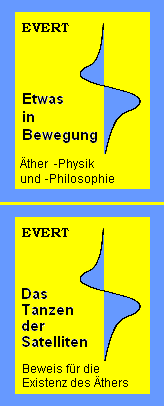

Alles von Oben
Nebenbei demonstrieren diese Mini-Hubschrauber deutlich das generelle Prinzip des Fliegens: Luft ist nach unten zu fördern, damit das Gerät abhebt und schwebt. Die Flugkünstler unter den Vögeln segeln mühe- und schwerelos durch die Lüfte. Wir Menschen konnten optimale Lösungen erst nach vielen Fehlversuchen finden. Wie überall in der Physik jedoch, haben wir noch immer nicht wirklich kapiert, was eigentlich Sache ist. Beispielsweise ist hier die Frage nach dem wahre Wesen der Gravitation noch immer nicht beantwortet.
Gravitation
Die Alternative? Nach meinen Schlussfolgerungen ist das ganze Universum erfüllt mit einer in sich beweglichen Substanz - so wie seit langen Zeiten schon der Äther als ´Quint-Essenz´ betrachtet wurde. Die Galaxien sind wirbelförmige Gebilde - aus Äther. Die Sterne sind winzige Partikel, die in den riesigen Ätherwirbeln passiv driften. Die typische Form einer Balken-Galaxis z.B. ergibt sich aus der Überlagerung von zwei gegenläufigen Kreisbewegungen. Sogar die Entstehung und Bewegung der Spiral-Arme ergibt sich zwangsläufig daraus.

Eingebettet im galaktischen Äther-Wirbel der Milchstrasse ist z.B. der ´Whirlpool´ unserer Sonne. In diesem werden die Planeten im Kreis herum geschoben, rein passiv, wie Eisblöcke in einem Wasserwirbel, wiederum ohne Anziehungskräfte. Eingebettet im Bewegungssystem der Ekliptik ist der Äther-Whirlpool der Erde, in welchem der Mond und geostationäre Satelliten im Kreis herum driften.
Beweise? Es ist nicht möglich, Satelliten auf polarem Orbit stationär zu halten (z.B. quer zur Sonne für bestmögliche Beobachtung): der ´Ätherwind´ bläst sie um die Erde herum. Nachzulesen in meinem Kapitel bzw. im Buch Das Tanzen der Satelliten.
Dieses ´Etwas in Bewegung´ ist das gemeinsame substanzielle Medium allen Seins, der physischen wie auch der ´geistigen´ Erscheinungen. Die Eigenschaften und Bewegungsmuster dieser Ursubstanz sind präzise beschrieben in der Äther-Physik und -Philosophie meiner Website bzw. im entsprechenden Buch.
Irdische Schwerkraft
Jeder Himmelskörper hat seine spezifische Gravitation in Abhängigkeit seiner Atmosphäre und inneren Struktur. Es gibt nirgendwo eine abstrakte Anziehung, wohl aber konkrete Ergebnisse aufgrund realer Bewegungen des Äthers. Erst wenn die Physiker realistische Vorstellungen zu den Eigenschaften und Bewegungsmustern des Äthers entwickeln, wird man wirklich ´schwerelos´ fliegen können. Erst dann wird SF-, Ufo- oder Alien-Technologie auch für uns real werden können.
Alles ist Äther
Bislang gilt nur die Materie als real existent, z.B. in Form der Atome. Bislang wurde Äther möglicherweise als existent nur zwischen Atomen erachtet oder diese auch möglicherweise durchdringend. Bislang verhinderte dieser Materie/Äther-Dualismus entscheidende Fortschritte in der Physik. Wirklich neue Erkenntnisse ergibt erst die Vorstellung, dass real existent nur dieser Äther ist. Auch Atome bestehen ausschließlich aus dieser einen Substanz. Das bislang unglaubliche und bizarre Verhalten subelementarer ´Teilchen´ der Quantenphysik wird damit verständlich: sie repräsentieren nur kurze Bahnabschnitte der internen Äther-Bewegungen. Selbstverständlich gibt es dabei immer einen fließenden Übergang von Formen dieses fortwährenden Schwingens auf komplexen Bahnen.
Die Energie-Konstanz ist das oberste physikalische Gesetz. Energie kann niemals verloren gehen in ein vermeintliches Nichts - aber nur, wenn alle Bewegung nur in einem einzigen Medium statt finden und es in diesem Äther nirgendwo ein Nichts gibt. Darum muss der Äther ein lückenloses Ganzes sein. Darin sind die Bewegungsmöglichkeiten ziemlich eingeschränkt - was die Begrenzungen auf ´naturgesetzkonformes´ Verhalten beschränkt. Es sind z.B. auch nur diese etwa hundert ´Bewegungsknäuel´ der chemischen Elemente als dauerhaft stabile Gebilde möglich.
Fortwährend Bewegung
Wir sind durchaus in der Lage, die Bewegungsmuster der Luftpartikel zu beeinflussen, wie dieses Bild 05.22.04 der Druck- und Strömungsverhältnisse um eine Tragfläche schön zum Ausdruck bringt. Umso erstaunlicher sind die üblichen Vorstellungen über die wahre Ursachen/Wirkungen beim Fliegen.
Mechanisches Hinauf-Drücken
Zudem ist diese Theorie nicht ganz korrekt: Luft wird an der Vorderseite des Rotors nach unten beschleunigt und damit der gewünschte Aufwärts-Impuls erreicht (Bild 05.22.05 bei A). Luft wird aber auch hinter dem Rotorblatt nach unten ´gesaugt´. Sie fließt ´von sich aus´ abwärts, d.h. ohne Aufwärts-Impuls auf den Rotor auszuüben (bei B). Nachteilig ist dabei, dass sich alle Luft spiralig nach unten bewegt, der Rotor also teilweise ´ins Leere´ schlägt (so wie analog dazu auch die Blätter konventionellen Propeller-Vortriebs).
Auch beim Start von Flugzeugen wird mit stark angestellten Tragflächen Luft abwärts gedrückt zur Erzeugung von Auftrieb. Flugzeuge sind tonnenschwer, wogegen die Masse eines Kubikmeter Luft nur etwa 1 kg beträgt. Tausende Kubikmeter Luft sind also zu beschleunigen. Das wird von Fachleuten exakt berechnet - tatsächlich aber können die Tragflächen solche Mengen Luft gar nicht erfassen (siehe z.B. Kapitel A380 und Auftrieb).
Es wird oft ausgeführt, dass nur ein Drittel des Auftriebs durch den Druck auf die Unterseite erreicht wird und zwei Drittel durch den ´Sog´ an der Oberseite (siehe im Bild bei C). Diese Aussage ist falsch: Sog kann niemals eine mechanische Bewegung erzeugen. Sog bietet nur dem Druck auf der Gegenseite einen geringeren Widerstand. Real also ergibt sich Auftrieb an Tragflächen (bzw. am Rotor und Propeller) aus (teilweise erhöhtem) Luftdruck an der Unterseite und reduziertem atmosphärischen Druck auf der Oberseite. Den wesentlichen Beitrag liefert also die beschleunigte Strömung der ´Falschluft´ an den Oberseiten (bei D). Dieser ´Dynamische Auftrieb´ funktioniert auch bei gering angestellten Tragflächen. Das ist der ökonomische Betrieb bei Reisegeschwindigkeit, perfektioniert beim Segelflug bzw. dem ´schwerelosen´ Gleiten natürlicher Flieger.
Zu dieser ´phänomenalen´ Beschleunigung der Strömung gibt es aber höchst unterschiedliche Erklärungs-Versuche. Die naive und immer noch weit verbreitete Begründung sind die unterschiedlich langen Wege, die vermeintlich in gleicher Zeit zu durchlaufen wären. Andere vermuten, dass oben der Luft plötzlich ein größeres Volumen zur Verfügung steht, was eine geringere Dichte ergibt. Daraus würde automatisch eine Abkühlung resultiert. Der Verlust an Wärme-Energie würde nun - dubioserweise - kompensiert durch Zuwachs an Bewegungs-Energie.
Genauso virtuos ist die Verwirrung hinsichtlich Ursache und Wirkung bei der gängigen Erklärung: bei Starten des Fliegers ergibt sich hinter der Tragfläche ein ´Anfahr-Wirbel´, woraus sich eine gegenläufig drehende ´Zirkulation´ um die Tragfläche zwingend ergeben müsse. Nur so wäre die Konstanz der Drehmomente dieses Systems garantiert - ein irrealer Fiktion, weil z.B. die Galaxis, die Ekliptik und Planeten alle gleichsinnig drehen. Offensichtlich kann die offizielle Lehre bislang die beschleunigte Strömung an der Tragflächen-Oberseite nicht logisch erklären.
Genau so ´hilflos´ steht man der Tatsache gegenüber, dass dieser dynamische Auftrieb mit sehr geringem Energie-Einsatz zu erreichen ist. Das Profil muss durch die ruhende Luft vorwärts bewegt werden (bzw. im Kreis herum beim Rotor und Propeller). Es ist Energie-Einsatz erforderlich zur Überwindung des Luftwiderstandes. Der am Profil generierte Auftrieb ist aber ein Vielfaches stärker, z.B. am eigentlichen Profil 1:100, beim ganzen Segelflugzeug noch 1:50, bei anderen Fluggeräten noch mindestens 1:10. Das kommt verdächtig nahe zur Vorstellung eines ´Perpetuum Mobile´. Entgegen aller schlüssigen Betrachtungen zur Druckdifferenz als ausreichender Ursache des dynamischen Auftriebs, wird als gültiger Lehrsatz fortwährend wiederholt: Auftrieb kommt nur zustande, wenn eine entsprechende Masse Luft entsprechend schnell nach unten beschleunigt wird.
Reale Sachverhalte
Im Übrigen ist überhaupt keine Beschleunigung erforderlich. Die Partikel bewegen sich auch bei ´ortsfest ruhender´ Luft mit rund 500 m/s. Sie fliegen von Kollision zu Kollision, kreuz und quer im (prinzipiell) ortsfesten Äther herum. In Bild 05.22.03 bei E ist eine solche Bahn schematisch skizziert. Die relative Lehre hinten-oben auf der Tragfläche erlaubt den Partikeln, dorthin etwas längere Distanzen zu fliegen. Ein typischer Bahnverlauf ist bei F skizziert: etwas mehr nach rechts gestreckt und entsprechend schmaler nach oben und unten.
Bei G sind nur Vorwärts- und Rückwärts-Bewegungen skizziert: jeweils nach rechts etwas länger als nach links. Bei H ist skizziert, wie oft Partikel auf die Tragfläche oben-hinten aufschlagen: je schneller die Strömung relativ zur Tragfläche, desto weniger Druck kann die Luft dort ausüben.
Die zusätzliche Strömung von 50 m/s ist nur 1/10 der normalen unablässigen Bewegung. Die Luft über der Tragfläche fließt z.B. binnen 0.01 Sekunden 0.5 m weit nach hinten, ein Luftpartikel hat in dieser Zeit jedoch ganze 5 m Wegstrecke zurück gelegt, vorwärts / rückwärts und aufwärts / abwärts, von Kollision zu Kollision. Die Vektoren der vielfältigen Bewegungen weisen also nur geringfügig weiter nach hinten, wenn die Luft insgesamt achteraus verlagert wird. Die einzelnen Partikel fliegen mit unveränderter Geschwindigkeit (also gleichbleibender ´Wärme´). Dieser Sturm muss nicht per mechanischer Beschleunigung und Energie-Einsatz erzeugt werden. Die Partikel fliegen jeweils nur etwas längere Strecken, in die relative Leere hinten-oben über der Tragfläche hinein.
Nutzung verfügbarer Energie
Anstatt mit hohem Energie-Einsatz erhöhten Luftdruck an der Tragflächen-Unterseite zu erzeugen, kann wesentlich vorteilhafter der normale Luftdruck an der Oberseite reduziert werden. In den generierten Sogbereich fällt ein Luftpartikel hinein, wenn er rein-zufällig nach hinten-abwärts gestoßen wird. Er kann relativ lange Strecken bis zu einer nächsten Kollision fliegen. Er fehlt in seinem Herkunftsbereich, so dass weitere Partikel nachfolgen können. Die relative Leere wandert damit nach vorn, bis vor die Nase. Allerdings ist die Ausbreitung dieser ´Information´ auf die Signalgeschwindigkeit des Schalls begrenzt (was offensichtlich nicht allgemein bekannt ist). Darum aber funktioniert dieser dynamische Auftrieb nur bis zur Schallgeschwindigkeit. Wer schneller fliegen will, muss mit viel Energie-Einsatz das Gerät aufwärts und vorwärts durch die zu langsame und damit starr wirkende Luft pressen.
Beweise? Ein Flugzeug fliegt optimal bei 85 % der Schallgeschwindigkeit in der dünnen Luft von 10 km Höhe (dortige Dichte etwa 0.4 kg/m^3). Die ´ortsfest ruhende´ Luft an der Unterseite der Tragfläche ist gleichbedeutend mit einer Strömung von 280 m/s. Nach Formel PD = 0.5 * rho * v^2 ist der dynamische Druck dieser ´unteren Strömung´ PDU = 15680 N/m^2. Entlang der Oberseite fließt die Luft um etwa 50 m/s schneller, relativ zum Flugzeug also mit Schallgeschwindigkeit von etwa 330 m/s. Entsprechend stärker ist oben der Strömungsdruck PDO = 21780 N/m^2. Je stärker der Luftdruck vorwärts gerichtet ist, desto schwächer kann der seitlich wirkende, statische Druck nur sein. Hier ist der Druck unten und oben unterschiedlich stark. Die Differenz PA = PDO - PDU ergibt zugleich den Auftriebs-Druck PA = 6100 N/m^2 (etwa entsprechend zur bekannten ´Flächen-Traglast´ von 580 kg/m^2 der A380). Weitere Argumente und Berechnungen sind in den genannten Kapiteln aufgeführt.
Paradigmen-Wechsel
Die Luft muss beschleunigt über die Tragfläche hinweg ziehen. Das wird erreicht, indem das Flugzeug sich vorwärts bewegt, in Richtung des Zielflughafens. Also ist dieses System in sich stimmig, weil Vorwärtsbewegung und Auftrieb zugleich erreicht werden.
Bei Hubschraubern und obigen Drohnen ist die Rotation der Rotorblätter nicht unmittelbar zielführend. Es entstehen unproduktive Strömungen und Turbulenzen. Vorrangig wird das unökonomische Prinzip des mechanischen Hinauf-Drückens praktiziert mit den bekannten Belastungen für die Umwelt.
Mein Vorschlag eines Paradigmen-Wechsels ist darum: in einem geschlossenen System ist eine geringe Menge Luft in einem geschlossenem Kreislauf zu führen. Durch geeignete Qualität und Gestaltung der internen Flächen kann differenzierte Geschwindigkeit von Strömungen und damit eine Differenz statischen Drucks erreicht werden. Dieses System wird weit weniger Energie-Einsatz erfordern. Die resultierende Kraft kann vertikal für Auftrieb eingesetzt werden oder auch horizontal für den Vortrieb. Helikopter und auch Flugzeuge sind damit unabhängig von externen Luft- oder Gas-Bewegungen zu manövrieren, also nurmehr mit internen Motoren zu fahren.
Diese neue Methode stellt eine ´Inversion´ des dynamischen Auftriebs statt, indem die Prozesse spiegelbildlich ins Innere eines geschlossenen Systems verlagert sind. Die theoretischen Überlegungen darin gelten unverändert. Die Realisierung ist ein rein praktisches Problem. Mit heutigen Hilfsmitteln, besonders der 3D-Drucker, wird man relativ schnell Erfolge erzielen.
Erster Flop
In meinem primitiven Modell ergaben sich aber zusätzliche Strömungen radial auswärts auf der Gleitfläche, aufwärts entlang der Seitenwand, wieder einwärts an der Haftfläche und mittig wieder abwärts (siehe Pfeile). Damit konnte kein Auftrieb generiert werden. Ich hatte nicht beachtet, dass Luft immer hin zur schnelleren Strömung ´gesaugt´ wird, hier also auf der Gleitfläche nach außen. Im vorigen Kapitel Experimente und Konsequenzen sind dieser Fehler aufgezeigt und Verbesserungsvorschläge dargestellt (siehe Bild mittig und unten).
Der Kreislauf wird auf zwei Ebenen organisiert, jeweils in Kanälen mit einer glatten Gleit- und einer rauen Haftfläche. Eine mittige Umwälzpumpe (UP) hält die Luft ständig in Bewegung. Besonders vorteilhaft ist eine kegelförmige Anordnung, weil dabei die Luft immer um gekrümmte Flächen geführt wird. Entlang der glatten Innenwand fallen die Luftpartikel immer in relative Leere und ergeben niedrigen statischen Druck. An der rauen Außenwand wird die Strömung verzögert und ergibt hohen statischen Andruck (Details hierzu siehe z.B. Kapitel
Luftdruck-Glockenmotor). Nachfolgend ist eine optimierte Version dargestellt.
Konus-Wendel-Motor
Der generelle Bewegungsablauf ist in Bild 05.22.08 oben skizziert: durch die ´Wendel-Kanäle´ steigt die Luft im Kreis herum auf langem Wege aufwärts (rot). Noch immer gleichsinnig drehend fließt die Luft (blau) anschließend auf relativ kurzem Wege wieder abwärts.
Unten im Bild ist eine kegelförmige Anordung der Kanäle skizziert. Hier sind z.B. nur zwei Kanäle eingesetzt (hell- und dunkelrot markiert). Wie oben ausgeführt wurde, ergibt sich damit erhöhte Reibung, Haftung und statischer Druck an den konkaven Haftflächen und schnelle Strömung mit geringem statischen Druck an den konvexen Gleitflächen.
Es wird in den Kanälen wiederum eine zusätzliche Querströmung geben, hier jedoch mit positivem Effekt. Die Strömungen werden zum Zentrum hin schneller sein als weiter außen. Außen ist der seitliche Druck höher als innen. Dadurch werden die Strömungen nach innen gebeugt (wie von Bernoulli beschrieben). Es ergibt sich eine beschleunigte Strömung im Kreis herum (wie bei einer Windhose). Die reale Geschwindigkeit der Luftpartikel bleibt hierbei konstant, wohl aber werden die Vektoren der Bewegungen besser geordnet, was einer stärkeren Vorwärtsbewegung entspricht. Dieser ´Wirbelwind´ stürmt also beschleunigt durch die spiraligen Kanäle nach oben. (Die Kanäle sind hier durch eine vertikale Trennwand unterteilt, womit die Bewegungen besser zu kontrollieren sind).
Die zentrale Pumpe muss also nur eine wohl geordnete Strömung in Gang halten. Es wird nur geringer Energie-Einsatz erforderlich sein. Man kann Luft nicht in einen Pumpen-Einlass hinein zwingen, vielmehr kann die Luft immer nur von-sich-aus dort hinein fallen. Danach aber schlagen die Pumpen-Schaufeln die Luftpartikel in Richtung des Drehsinns. Die Partikel werden dabei tatsächlich beschleunigt. Die eingesetzte Energie wird nahezu vollkommen in Wärme umgewandelt. Das ist durchaus positiv, weil damit das gesamte System unter erhöhtem Druck gefahren wird.
Normalerweise ist der Reibungswiderstand in engen Rohren sehr hoch, es kommt bald zum Abriss der Grenzschicht, es resultieren Turbulenzen und damit reduziertem Durchsatz - sofern dieser per Druck erzeugt wird. Ganz anders verhalten sich Strömungen, die per Sog initiiert werden: dann fallen die Luftpartikel auch in engen Kanälen immer in Richtung geringerer Dichte. Hier bedeutet das konkret, dass die Umwälzpumpe und Querschnitte so auszulegen sind, dass die Sogwirkung vorrangig ist gegenüber der Ausübung von Druck (siehe z.B. Kapitel Sog- und Druck-Schaufeln meiner Website).
Beispiel-Daten
Der dynamische Druck wird nach obiger bekannten und bewährten Formel PD = 0.5*rho*v^2 gerechnet, mit einer Dichte rho = 1.2 kg^3. Als Differenz der Strömungen zwischen Gleit- und Haftflächen werden nur 5 m/s unterstellt. Bei durchschnittlichen Geschwindigkeiten von 50, 70 oder 90 m/s liefert dieser Zylinder einen Auftrieb von etwa 150, 200 bzw. 250 kg. Ein Hubschrauber von 3500 kg Gesamtgewicht erfordert also maximal 25 solcher Einheiten für den Auftrieb. Das ist in einem Bauvolumen von 8 m Länge, 2.5 m Breite und 0.5 m Höhe zu realisieren, wie früher schon in oben skizziertem Helikopter beschrieben wurde.
Fazit
Dominant ist in der Theorie noch immer die Fixierung auf dieses actio = reactio der Newtonschen Mechanik. Dieses ´Luft-abwärts = Flieger-aufwärts´ ist aber nicht haltbar (wovon sich auch Physiker mit einigem Nachdenken müssten überzeugen können). Es findet sehr wohl eine Aktion statt: das Schaffen einer Zone relativer Leere. Und darauf erfolgt umgehend und voll-automatisch eine Reaktion statt: die Luftpartikel fallen immer in Bereiche geringerer Dichte. Es kommt eine Strömung zustande und nur deren Neben-Effekt, der entsprechend reduzierte statische Druck, wird für den Auftrieb nutzbar. Das ist das ´Geschenk´, das keinen Energie-Einsatz erfordert (sondern nur für die Überwindung des Luftwiderstandes zur Herstellung des Sogbereiches, wozu im Extremfall schon eine gekrümmte Fläche ausreichend ist.
Evert / 31.12.2016
Ein uralter Menschheitstraum wurde wahr mit den neuartigen Spielzeug-Drohnen: die Welt aus der Vogel-Perspektive schauen zu können. Allerdings und zeitgemäß: nur virtuell per fliegender Kamera. Das Fernsehen zeigt nun ´alles von oben´: Wattenmeer, Flüsse und Seen, Berge, Burgen und Schlösser, Städte, Strassen und Bahnen.
Newton formulierte ein neutrales Gesetz zur Gravitation. Er warnte davor, diese als Anziehungskraft zu interpretieren. Heute aber geht man ´selbst-verständlich´ davon aus, dass zwischen allen Himmelskörpern eine universelle Anziehung wirksam ist und gleichermaßen auch zwischen den Massen der Erde und dem Fluggerät. Die irdische Gravitations-´Konstante´ kann aber nicht als universumweit repräsentativ sein, weil sie schon hier lokal und temporär schwankend ist. Darüber hinaus wären die Berechnungen in der Galaxis und im Universum nur einigermaßen stimmig, wenn zusätzlich zur bekannten Materie das Zwanzigfache einer ´Dunkler Materie´ unterstellt wird. Diese ´alternativlose´ Anschauung ist also wissenschaftlich etwa so korrekt wie die Vermutung, dass Grönlands Eisberge sich nach Süden hingezogen fühlten.
Die irdische Gravitations-´Konstante´ kann aber nicht als universumweit repräsentativ sein, weil sie schon hier lokal und temporär schwankend ist. Darüber hinaus wären die Berechnungen in der Galaxis und im Universum nur einigermaßen stimmig, wenn zusätzlich zur bekannten Materie das Zwanzigfache einer ´Dunkler Materie´ unterstellt wird. Diese ´alternativlose´ Anschauung ist also wissenschaftlich etwa so korrekt wie die Vermutung, dass Grönlands Eisberge sich nach Süden hingezogen fühlten.
Die Vorstellung eines Photons als Teilchen / Welle ist eine wissenschaftliche Hilfskonstruktion für das Unverständnis, wie sich Etwas-durch-Nichts-hindurch sollte bewegen können. Konkret ist es eine simple Umdrehung des Äthers, die sich spiralförmig im Äther vorwärts ´schraubt´. Es bewegen sich weder Teilchen noch Wellen vorwärts, vielmehr wandert nur die Struktur dieser Bewegung vorwärts im Äther (siehe Logo obiger Bücher). Durch allen Äther schwirren fortwährend die Schwingungen von Strahlung aller Art. Jedes Atom ist ständig von allen Seiten davon betroffen. In der Atmosphäre wird ´harte´ Strahlung abgefangen. Zur Erde hin wird der Äther zunehmend ruhiger. Je geringer der Raum zwischen den Atomen, desto ähnlicher ist das Schwingen außerhalb und innerhalb der Atome. Jedes Atom erfährt somit hohen Strahlungsdruck von oben und marginal geringeren von unten (schematisch angezeigt in Bild 05.22.03). Dieser Druck-Gradient bewirkt die Erscheinung der Gravitation. In Abhängigkeit diverser Faktoren ist die irdische Beschleunigungskraft lokal und zeitlich variierend (ausführlich beschrieben in den genannten Quellen).
Durch allen Äther schwirren fortwährend die Schwingungen von Strahlung aller Art. Jedes Atom ist ständig von allen Seiten davon betroffen. In der Atmosphäre wird ´harte´ Strahlung abgefangen. Zur Erde hin wird der Äther zunehmend ruhiger. Je geringer der Raum zwischen den Atomen, desto ähnlicher ist das Schwingen außerhalb und innerhalb der Atome. Jedes Atom erfährt somit hohen Strahlungsdruck von oben und marginal geringeren von unten (schematisch angezeigt in Bild 05.22.03). Dieser Druck-Gradient bewirkt die Erscheinung der Gravitation. In Abhängigkeit diverser Faktoren ist die irdische Beschleunigungskraft lokal und zeitlich variierend (ausführlich beschrieben in den genannten Quellen).
Neben dieser ´mysteriösen´ Gravitation gibt es in der Physik viele ungeklärten Kräfte, Zustände und Wirkungen, die nur unzureichend mit abstrakten Begriffen benannt werden. Real sind z.B. auch die elektrische Ladung oder ein magnetisches Feld ganz konkrete Bewegungsmuster des Äthers. Erste Versuche zur Erklärung des Elektro-Magnetismus sind in meiner Äther-Elektro-Technik dargestellt. Unbewusst manipulieren wir also durchaus schon Bewegungsstrukturen des Äthers. Es ist noch viel Forschungsarbeit zu leisten, damit wir bewusst das Potential des Äthers höchst effektiv zu nutzen lernen.
Generell ist aller Äther überall fortwährend in sich schwingend, stellt somit unbegrenzte Bewegungsenergie dar. Wie alle Atome, so sind auch die Luftpartikel lokale Bereiche von in sich harmonisch schwingendem Äther. Es sind jeweils spezielle Bewegungsmuster, aber immer mit direktem Kontakt und fließendem Übergang zum umgebenden Äther. Nur darum bewegen sich auch die Luftpartikel unablässig. Solange in einem Bereich keine Wärme zu- oder abgeführt wird, fliegen sie mit gleichbleibender Wärme, d.h. konstanter Geschwindigkeit herum, mit etwa 500 m/s, von einer Kollision zur nächsten. Solange sie sich chaotisch in beliebige Richtung bewegen, kompensieren sich die Kräfte gegenseitig. Wenn an sich ortsfeste Luft gegen eine Wand trifft, wird der atmosphärische Druck messbar. Andererseits, wenn die Partikel bevorzugt in eine Richtung fliegen, wird der Strömungsdruck messbar. Zugleich können dann die Partikel nur geringeren Druck zur Seite hin ausüben, d.h. der statische Druck ist entsprechend geringer - entsprechend zur konstanten Summe aller Energien, wie es z.B. von Bernoulli klar beschrieben wurde.
Nur darum bewegen sich auch die Luftpartikel unablässig. Solange in einem Bereich keine Wärme zu- oder abgeführt wird, fliegen sie mit gleichbleibender Wärme, d.h. konstanter Geschwindigkeit herum, mit etwa 500 m/s, von einer Kollision zur nächsten. Solange sie sich chaotisch in beliebige Richtung bewegen, kompensieren sich die Kräfte gegenseitig. Wenn an sich ortsfeste Luft gegen eine Wand trifft, wird der atmosphärische Druck messbar. Andererseits, wenn die Partikel bevorzugt in eine Richtung fliegen, wird der Strömungsdruck messbar. Zugleich können dann die Partikel nur geringeren Druck zur Seite hin ausüben, d.h. der statische Druck ist entsprechend geringer - entsprechend zur konstanten Summe aller Energien, wie es z.B. von Bernoulli klar beschrieben wurde.
Nach herrschender Meinung ist zur Erzeugung von Auftrieb eine entsprechende Luftmasse entsprechend schnell nach unten zu beschleunigen. Diese konventionelle Methode wird durch die Rotoren obiger Drohnen angewandt, analog zur üblichen Technik bei Hubschraubern. Diese Methode des mechanischen Hinauf-Drückens ist unökonomisch, weil der Schwerkraft nochmals höhere Gegenkräfte entgegen gesetzt werden. Der Akku der Drohnen ist nach wenigen Minuten leer und ebenso ist die Reichweite der Hubschrauber relativ beschränkt. Dynamischer Auftrieb
Dynamischer Auftrieb
Es ist allgemein anerkannt, dass Auftrieb letztlich immer nur aufgrund der Druck-Differenz an beiden Seiten einer Tragflächen zustande kommt (und analog dazu auch am Rotor und Propeller). Die Druck-Differenz kommt automatisch zustande, wenn Luft an beiden Seiten unterschiedlich schnell entlang fließt. Die Geschwindigkeits-Differenz kommt zustande, wenn ein Tragflächen-Profil durch die Luft geführt wird: entlang der konvexen Oberseite fließt die Luft schneller.
In Kapitel Auftrieb an Tragflächen habe ich die realen Prozesse ausführlich dargestellt. Danach wird die Luft über der Tragfläche ´ruckartig´ beschleunigt auf durchschnittlich etwa 45 bis 50 m/s, d.h. bis zu 180 km/h bzw. rund 1/6 der Schallgeschwindigkeit. Es würde enorme Energie erfordern, einen Festkörper auf diese Geschwindigkeit binnen Sekunden-Bruchteilen zu beschleunigen. Im Gegensatz dazu erfordert es praktisch keinen Aufwand, diese Strömung in Gasen zustande zu bringen. Der Prozess ist vergleichbar mit dem Öffnen der Ladentüre beim Schlussverkauf. Ebenso erfordert das Öffnen eines Wasserhahnes praktisch keine Energie, um sofort den gesamten Strömungsdruck frei zu setzen. Ein lauer Wind wird zum Sturm durch eine ´Düse´ - nicht weil die Luft dort hindurch gepresst würde, sondern weil sie von-sich-aus in die relative Leere hinter der Engstelle stürzt.
Das dominante Denken ´Energie-Input gleich Energie-Output´ läuft hier völlig ins Leere. Ein hoher Strömungsdruck wird sogar rein passiv erreicht, spürbar z.B. beim Segeln um ein Kap oder auch schon an jeder Hausecke. Zur Generierung von Auftrieb ist dazu lediglich das ´Zurückweichen einer schrägen Wand´ erforderlich (um fortwährend neue Bereiche relativer Leere zu bilden). Aufgrund der strömungsgünstigen Form der Tragfläche erfordert das nur geringen Vortrieb. Dabei findet nicht der übliche Prozess einer Energie-Umwandlung statt, vielmehr wird eine Nutzung gegebener Bewegungsenergie durch zweckdienliche Formgebung und simple Organisation von Bewegungsabläufen ermöglicht.
Es ist müßig, über die wahren Hintergründe des Auftriebs an Tragflächen zu streiten - solang das Fliegen hinreichend funktioniert. Entscheidend aber ist die Erkenntnis, dass beim dynamischen Auftrieb kein zusätzlicher Druck mit hohem Energie-Einsatz zu produzieren ist, sondern nur partielle Reduktion gegebenen Drucks mit relativ geringem Aufwand zu organisieren ist. Der entscheidende Fakt ist hierbei, dass keine Energie-Umwandlung statt findet, wie es allgemein üblich ist bei gängiger Technik. Unbegrenzt verfügbar ist die Bewegungs-Energie des Äthers, hier in Form der Luftpartikel. Nur diese wird zeitweilig in zweckdienlicher Form ´kanalisiert´ durch die Generierung künstlicher Strömung und einer geordneten Ausrichtung der Bewegungs-Vektoren. Diese theoretischen Grundlagen und die Bewegungsmuster des Äthers wie der involvierten Luftpartikel sind in meiner Website detailliert beschrieben. Hier habe ich diese Überlegungen noch einmal kurz wiederholt, damit die zwanghafte Fixierung auf dieses ´Luft-abwärts = Flieger-aufwärts´ gelöst wäre. Erst dann werden völlig neue Konzeptionen und Konstrukte denkbar und machbar.
Diese theoretischen Grundlagen und die Bewegungsmuster des Äthers wie der involvierten Luftpartikel sind in meiner Website detailliert beschrieben. Hier habe ich diese Überlegungen noch einmal kurz wiederholt, damit die zwanghafte Fixierung auf dieses ´Luft-abwärts = Flieger-aufwärts´ gelöst wäre. Erst dann werden völlig neue Konzeptionen und Konstrukte denkbar und machbar.
 Ich habe mit einem allzu simplen Experiment naturgemäß nur einen Flop landen können (siehe Bild 05.22.07 oben). Nach dem Prinzip des Glockenmotors sollten Rotorblätter (RB) nahe einer möglichst glatten Fläche (GF) drehen und dort eine schnelle Strömung aufrecht erhalten. Wenn die Strömung entlang einer möglichst rauen Fläche (HF) langsamer wäre, müsste eine für den Auftrieb nutzbare Druckdifferenz zustande kommen.
Ich habe mit einem allzu simplen Experiment naturgemäß nur einen Flop landen können (siehe Bild 05.22.07 oben). Nach dem Prinzip des Glockenmotors sollten Rotorblätter (RB) nahe einer möglichst glatten Fläche (GF) drehen und dort eine schnelle Strömung aufrecht erhalten. Wenn die Strömung entlang einer möglichst rauen Fläche (HF) langsamer wäre, müsste eine für den Auftrieb nutzbare Druckdifferenz zustande kommen.
Vor einem Jahrzehnt habe ich die Problematik des
Forellen-Vortriebs dargestellt, wobei die Forellen eine Vortriebskraft in ihren engen Kiemen generieren. Analog dazu könnten auch hier ziemlich enge Kanäle eingesetzt werden, z.B. nur 3 cm hoch und 20 cm breit. Viele Kanäle sollten über einander zu stapeln sein. Im Gegensatz zu allen bislang diskutierten Versionen sind die Kanäle nun wie in einer Wendeltreppe übereinander angeordnet. Mittig im Bild ist auf der Systemwelle (grün) eine Umwälzpumpe (UP) skizziert, deren Blätter (blau) die Luft oben absaugen und nach unten drücken. In einem ringförmigen Bereich (rot) fließt die Luft aufwärts, hier z.B. durch vier Kanäle (ein Kanal ist dunkelrot markiert. Der Ein- und Auslass ist jeweils ein Viertel der Ringflächen unten und oben).
Mittig im Bild ist auf der Systemwelle (grün) eine Umwälzpumpe (UP) skizziert, deren Blätter (blau) die Luft oben absaugen und nach unten drücken. In einem ringförmigen Bereich (rot) fließt die Luft aufwärts, hier z.B. durch vier Kanäle (ein Kanal ist dunkelrot markiert. Der Ein- und Auslass ist jeweils ein Viertel der Ringflächen unten und oben).
Ein runder Zylinder mit einem Radius von 0.4 m und einer Höhe von 0.5 m hat ein Volumen von rund 0.25 m^3. Es wird darin eine Luft-Masse von nur etwa 300 Gramm umgewälzt. Dennoch lastet der atmosphärische Druck auf jedem Quadratzentimeter Fläche mit mehr als 1 kg - und eine Differenz von ein paar Gramm ergibt schon ausreichenden Auftrieb. Wenn die Kanäle ringförmig zwischen Radien von 0.2 m und 0.4 m und etwa 13 Lagen übereinander angeordnet sind, steht eine wirksame Fläche von etwa 5 m^2 zur Verfügung.
Das niedliche Summen obiger Kamera-Dronen täuscht darüber hinweg, dass die Fliegerei eine ziemliche Umweltverschmutzung darstellt (die Segelflieger ausgenommen). Allein die gewaltige Lärmbelästigung deutet darauf hin, dass diese Technik nicht optimal sein kann. Wenn man schon den Auftrieb praktisch ´geschenkt´ bekommt, müsste eigentlich ein Zehntel des Kraftstoffverbrauchs ausreichend sein. Und zudem müssten die Motoren entsprechend leiser arbeiten. Dieser klaren Theorie entsprechend, können Strömungen differenzierter Geschwindigkeiten auch in einem geschlossenen System produziert werden. Die aus der Differenz statischer Drücke resultierenden Kräfte können für den Auftrieb genutzt werden und analog dazu auch für den Vortrieb (auch der Flugzeuge und anderer Fahrzeuge). Ich habe hier einige Vorschläge zur Gestaltung der Bewegungsabläufe vorgestellt. Selbstverständlich werden Fachleute in relativ kurzer Zeit sehr viel bessere Lösungen entwickeln.
Dieser klaren Theorie entsprechend, können Strömungen differenzierter Geschwindigkeiten auch in einem geschlossenen System produziert werden. Die aus der Differenz statischer Drücke resultierenden Kräfte können für den Auftrieb genutzt werden und analog dazu auch für den Vortrieb (auch der Flugzeuge und anderer Fahrzeuge). Ich habe hier einige Vorschläge zur Gestaltung der Bewegungsabläufe vorgestellt. Selbstverständlich werden Fachleute in relativ kurzer Zeit sehr viel bessere Lösungen entwickeln.
www.evert.de/ap0522.pdf ist die Druck-Version dieses Kapitels.
Aero - Technologie